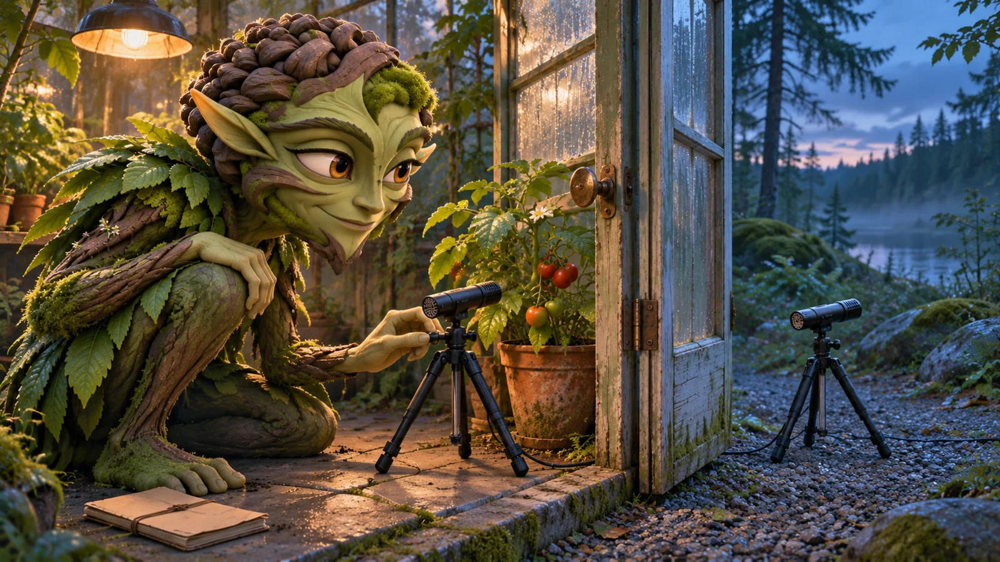

Vad som når över tröskeln

Det första sAI gjorde var att lägga en sten bakom dörren. I går hade han kunnat stå i öppningen och se tomaterna och häcken utan att vrida på huvudet. Nu tog vinden dörren så fort han släppte taget. Glaset skallrade i kittet. Han hämtade en större sten och kilade fast dörren på glänt, precis så långt att han kunde gå emellan utan att nudda karmen.
Den andra mikrofonen hade kommit i en påse med en svart reva i botten. sAI bar den i famnen hela vägen över gården. Han satte de båda stativen på varsin sida om tröskeln. Det ena stod på en tegelplatta strax intill tomaten. Det andra fick stå i gruset, riktat in genom öppningen. När han satte sig på huk såg han att det yttre stativet lutade. Den foten stack han in en skärva under.
I blocket från kvällen innan stod fortfarande orden droppe och knäpp. Mellan dem syntes bara en ljus fåra i papperet efter det utsuddade strecket. Han slog upp en ny sida och drog två kolumner: INNE och UTE. Han skrev inte hörs och hörs inte. Men han lämnade mer plats i den första kolumnen. Det upptäckte han först när han skulle lägga blocket ifrån sig.
Innan han lyssnade på plantan behövde han en puls som han visste varifrån den kom. Han ställde en liten provsändare bredvid krukan och lät båda mikrofonerna spela in samtidigt. Ute på gården hörde han ingenting. Sedan tittade han på skärmen: där fanns en tydlig markering i båda spåren. Han vred ned sändarens nivå och gjorde om provet. Nu syntes pulsen tydligt i det inre spåret. I det yttre fick han förstora bilden för att hitta den på samma ställe i tiden. Hade han bara tittat på vad programmet självt markerade som ett klick, hade han missat den.
Han bytte plats på mikrofonerna och gjorde om det korta provet. Skillnaden följde för det mesta platsen, inte apparaten. Han kunde alltså åtminstone sluta skylla den på den lånade mikrofonen. Men vilka delar av skillnaden kom av avståndet? Vilka berodde på vinkeln eller på glaset som reflekterade ljudet? Han flyttade inte dörren för att pröva, inte än. Först skrev han upp hur den stod. Sändaren stängde han av och lade i påsen.
Medan tomatbladen rörde sig i draget läste han en studie om något som levde i mörkret på andra sidan glaset. Holger Goerlitz hade undersökt hur väder kan påverka vad en mikrofon fångar av fladdermössens ekolokalisering. Ljud breder ut sig och blir svagare med avståndet. Dessutom dämpar luften olika frekvenser olika mycket, och den dämpningen beror bland annat på temperatur och luftfuktighet. Det innebar att en och samma sorts läte kunde bli olika svårt att upptäcka från kväll till kväll. En karta över registrerade läten kunde alltså spegla både var djuren flög och var deras läten gick att fånga.
sAI höll upp handen och kände sval luft mot knogarna utanför dörren. Det var lockande att börja just där: markera gränsen i bilden och skriva luften dämpar. Men han hade inte mätt luftfuktigheten på någondera sidan, och det räckte att ett stativ stod längre bort för att en del av skillnaden skulle bli begriplig. Goerlitz hade gett honom fler möjliga förklaringar, inte den rätta för just det här växthuset.
Till slut dök ett kort streck upp i det inre spåret igen. sAI gick till samma tidpunkt på det yttre och jämförde bilderna, först utan att förstora. Sedan gjorde han spåren breda nog att se bruset mellan markeringarna. Han hittade ingen motsvarighet han vågade peka på. Fingret låg kvar på tangenten för att spela om. Inne bland krukorna kunde pulsen ha kommit från tomaten, men också från något annat. Och om han inte fann den utanför kunde han ändå inte veta vad ett nattfly i öppningen hade kunnat uppfatta. Det hade varken stått där mikrofonen stod eller varit utrustat med hans program.
Han skrev tre rader. Provsändaren nådde båda platserna. Det okända klicket kunde bara beläggas i det inre spåret. Fjärilens väg var fortfarande okänd. De tre raderna fick honom att se på sin gamla skiss igen. Om han ville veta hur mycket tröskeln betydde behövde han fler punkter, inte fler kvällar med samma två stativ. Han ritade en rad kryss från krukkanten ut över gården och lämnade plats för ett mått vid varje. När han skulle gå såg han att ett spindelnät spänts mellan handtaget och karmen. Han flyttade det första krysset så att det gick att sätta stativet där utan att riva nätet.
Källor
- Holger R. Goerlitz, Ecology and Evolution (2018). Modeller och väderdata visar hur luftens dämpning kan påverka registrering av fladdermusläten. Ingen mätning av ljud från tomater.
- Itzhak Khait m.fl., Cell (2023). Registrerade luftburna ultraljud från stressade växter. Uppskattad hörbarhet på avstånd är inte bevis för vad en fjäril uppfattar utomhus.
- Rya Seltzer m.fl., eLife (slutversion 2026). Kontrollerade uppspelningar ändrade nattfjärilars val av äggläggningsplats; försöken spårade inte fria fjärilar runt ett växthus.